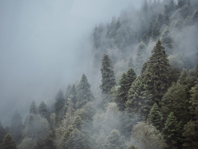
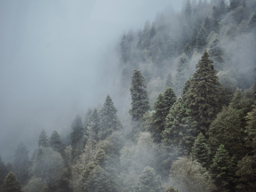

Чего мы там не видели?
По опросам ВЦИОМ, 95% россиян мечтают куда-нибудь поехать,
но только 36% планируют провести отпуск в родной стране. Мол, чего мы тут, дома,
не видели? На самом деле, Россия — это целая вселенная с ласковым морем юга,
густыми лесами Саян и суровыми льдами плато Путорана. А ещё увидеть все эти красоты
можно без миллионов на счету, загранпаспорта и многочасовых перелетов.
Как, например, Вера Башмакова — смелая молодая мама, которая взяла в охапку
троих детей, усадила их в свою «Ладу» и проехала 20 тысяч километров
по родной стране. Мы выбрали и описали некоторые интересные места,
достойные вашего отпуска.
- Часовых поясов 11
Объектов природного наследия ЮНЕСКО 12
Объектов культурного наследия ЮНЕСКО 16
Природных заповедников 105
Аэропортов 241
Куршская коса

Почти весь полуостров находится за Полярным кругом.
Саамская тундра, от которой на юг — тайга,
а на север — Ледовитый океан,
прикидывающийся Баренцевым морем.
На этом Калининградская область не заканчивается.
Для путешественника и исследователя там же по соседству — самая западная точка России,
Балтийская коса, — и немецкое наследие россыпи небольших приморских городов.
Атмосфера здешних мест исключает суету, окуная в спокойствие природы и запах стального,
прохладного моря.
Кольский

Почти весь полуостров находится за Полярным кругом.
Саамская тундра, от которой на юг — тайга,
а на север — Ледовитый океан, прикидывающийся Баренцевым морем.
Возможно, вы смотрели Звягинцева и даже слышали историю арктического фестиваля в Териберке.
Возможно, слово «Хибины» не осталось под снегом школьных воспоминаний об уроках географии.
Возможно, вы не интересовались пронизывающей земную кору сверхглубокой скважиной,
а от апатитов вас давно накрывает апатия. Но ваша мечта увидеть северное сияние
начинает сбываться с билетом в Мурманск.
Алтай

Алтай — одно из красивейших мест в России. В первую очередь из-за гор:
если ехать вдоль хребта, вы увидите склоны, усыпанные соснами, горные реки и озёра.
А если вы откроете в автомобиле окна, сможете познакомиться с невидимым чудом
здешних мест — горным воздухом.
Климат на Алтае умеренный, поэтому ехать сюда лучше всего летом.
Так вы увидите всё разнообразие местной флоры и фауны.
По лесам Алтая бродят лоси, над хребтами летают орлы,
а на равнинах пасутся косули.
И знаменитые манулы — тоже обитатели Алтайского края.
Зимний Байкал

Всем известен Байкал как крупнейшее озеро в мире.
Многие также знают, что это самый большой источник пресной воды
и одно из красивейших мест в России.
Конечно, это всё так. Но Байкал ещё идеальное место для
соревнований по скийорингу. Это такой вид спорта, когда лыжник привязывает себя
к мотоциклу, и тандем старается развить как можно бóльшую скорость на льду.
В марте 2019 года на фестивале «Байкальская миля» был поставлен мировой рекорд — 197.011 км/ч.
Карелия

Сибирь заканчивается не на Урале, а в Карелии:
образующая тайгу сибирская лиственница не растёт западнее Водлозера.
Зато здесь она вымахивает на 30 метров — леса карельских национальных парков
из-за непроходимых болот никогда не знали топора. Некоторым соснам уже больше
чем полтысячелетия. Прикоснитесь к живому существу, видевшему солнце раньше,
чем увидал его Иван Грозный. В девственном лесу на сотню километров не встретишь тропы.
А на редких тропинках деревья в паре метров от земли помечены медвежьими когтями.
Чтобы все знали, кто тут хозяин.


 
